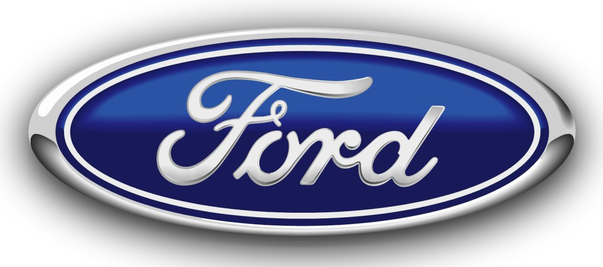

<!DOCTYPE html>
<html lang="en">
<head>
    <meta charset="UTF-8">
    <meta name="viewport" content="width=device-width, initial-scale=1.0">
    <meta http-equiv="X-UA-Compatible" content="ie=edge">
    <title>automobile-history</title>
</head>
<body>
    <h1 style="color: #E5712E; background-color: #57249C; font-size: 45px;"> 
        HISTOROCAR
    </h1>
    <p style="text-align:left;"></p></p>
<h2 style="text-align:center; color: #E5712E; background:#57249C;font-size: 30px; "><blockquote><i><marquee>"Welcome to our Website.:) You can see the History of Automobile below 
    and dont forget to share the Blog!"</marquee> </i></blockquote></h2>
<p style="text-align:left; color: #1f1f1f;font-size: 60px "><u>Automobile History:</u></p>
<br><br>
<p style="text-align:center;"></p></p>
<br><br>

<blockquote><p style="text-align:left; color: #1f1f1f;font-size: 20px "><b>The automobile</b> was first invented and perfected 
    in Germany and France in the late 1800s,though Americans quickly came to dominate the automotive industry in the first half
     of the twentieth century. Henry Ford innovated mass-production techniques that became standard, and Ford, General Motors 
     and Chrysler emerged as the “Big Three” auto companies by the 1920s.Manufacturers funneled their resources to the military 
     during World War II, and afterward automobile production in Europe and Japan soared to meet growing demand. Once vital to 
     the expansion of American urban centers, the industry had become a shared global enterprise with the rise of Japan as the
      leading automaker by 1980.<br><br>
    Although the automobile was to have its greatest social and economic impact in the United States, it was initially perfected in Germany and France toward the end of the nineteenth century by such men as Gottlieb Daimler, Karl Benz, Nicolaus Otto and Emile Levassor.</p></blockquote>

    <p style="text-align:left; color: #1f1f1f;font-size: 60px "><u>When Were Cars Invented?</u></p>
    <blockquote><p style="text-align:left; color: #1f1f1f;font-size: 20px ">The 1901 Mercedes, designed by Wilhelm Maybach for 
        Daimler Motoren Gesellschaft,deserves credit for being the first modern motorcar in all essentials.<br><br>Its thirty-five-horsepower
         engine weighed only fourteen pounds per horsepower, and it achieved a top speed of fifty-three miles per hour. By 1909, with the 
         most integrated automobile factory in Europe, Daimler employed some seventeen hundredworkers to produce fewer than a
         thousand cars per year.</p>
         <br><br>
         <p style="text-align:center;"></p></p>
         <br><br>
         <blockquote><p style="text-align:left; color: #1f1f1f;font-size: 20px "> Nothing illustrates the superiority of European design better than the sharp contrast between this first Mercedes model
        and Ransom E. Olds‘ 1901-1906 one-cylinder, three-horsepower, tiller-steered, curved-dash Oldsmobile, which was merely a
        motorized horse buggy. But the Olds sold for only $650, putting it within reach of middle-class Americans, and the 1904
        Olds output of 5,508 units surpassed any car production previously accomplished.<br><br>The central problem of 
        automotive technology over the first decade of the twentieth century would be reconciling the advanced design of the 1901
         Mercedes with the moderate price and low operating expenses of the Olds. This would be overwhelmingly an American achievement.
        </p></blockquote>
    
        <p style="text-align:left; color: #1f1f1f;font-size: 60px "><u>Revolution in Automobile Industry:</u></p>
        <p style="text-align:center;"></p></p>
    <br><br>
    <blockquote><p style="text-align:left; color: #1f1f1f;font-size: 20px "> The automotive industry is currently experiencing three
         simultaneous revolutions: first, the electric car; second, the autonomous and connected car; and third, digital mobility.
          The scale of this industry upheaval is unprecedented, exceeding even the major changes undergone by the automobile since 
          it was first invented. As well as being simultaneous, all three revolutions are extremely fast-paced. And I firmly believe 
          that these rapid transformations will reconcile the car with the city. <br>
        World history has taught us that economic development and mobility go hand in hand.
        </p></blockquote>
        <br><br>
        <p style="text-align:left; color: #1f1f1f;font-size: 60px "><u>Top 10 Automobile Company:</u></p>
        <blockquote><p style="text-align:left; color: #EC5C81;font-size: 20px "> 
            <a href="https://global.toyota/en/" target="_blank"><h2>1. Toyota Motor</h2> </a><br>
            <p style="text-align:center;"></p></p>
            <blockquote><p style="text-align:left; color: #1f1f1f;font-size: 20px "> Toyota is one of the top 10 automobile companies in the
                 world both in terms of revenue and production. Toyota was founded in 1937 by Kiichiro Toyoda at Toyota-shi, Japan as a diversification
                 from Toyoda Loom Works established by his father, Sakichi Toyoda. Toyota was the first among the top 10 car companies in the
                 world to reach an annual production capacity of 10 million cars in 2012, the same year Toyota also manufactured it’s 200th
                 million cars. This top 10 automobile company in the world in 2018 with five top-selling car brands Toyota, Hino, Lexus,
                 Ranz, and Daihatsu was estimated to have an annual revenue of around $240 billion and employs more than 365,000 professionals.
               </p></blockquote>
            <a href="https://www.vw.com/" target="_blank"><h2>2. Volkswagen</h2> </a><br>
            <p style="text-align:center;"></p></p>
            <blockquote><p style="text-align:left; color: #1f1f1f;font-size: 20px "> Volkswagen is the largest car manufacturer in the world 
                in terms of volume, manufacturing around 10,700 million cars every year. Volkswagen Group is one of top 10 automobile companies 
                in the world with various brands of top-class cars such as Audi, Bugatti, Bentley, Lamborghini, Porsche, SEAT, Skoda, and VW. Volkswagen Group was formed in 1937 at Wolfsburg, Germany by the German Labor Front. This top ten car company in the world in 2018 has an annual revenue of more than 
                $117 billion and has over 120 production units across the globe employing as many as 640,000 professionals.
              </p></blockquote>
            <a href="https://www.daimler.com/en/" target="_blank"><h2>3. Daimler AG</h2></a><br>
            <p style="text-align:center;"></p></p>
            <blockquote><p style="text-align:left; color: #1f1f1f;font-size: 20px "> Daimler is one of the top 10 automobile companies in the
                world with a strong market presence in Europe and American region. With an annual revenue of over $80 billion at the end of
                2017, this top 10 car company in the world was previously known as Daimler-Benz AG and was established in the year 1926 by
                Karl Benz and Gottlieb Daimler at Stuttgart, Germany. This top automobile company in the world has top-selling car brands 
                like Mercedes-Benz, Mercedes-AMG, Maybach, and Smart. Daimler manufacturesaround 3.3 million cars every year and has more than 289,000 employees working for this top automobile company.
              </p></blockquote>
            <a href="https://www.bmw.com/en/index.html" target="_blank"><h2>4. BMW</h2></a><br>
            <p style="text-align:center;"></p></p>
            <blockquote><p style="text-align:left; color: #1f1f1f;font-size: 20px "> BMW is another top 10 automobile companies in 
                the world with a global presence in all continents in the world. BMW was founded in the year 1916 by Karl Rapp at Munich,
                Germany. Among all the top 10 automobile companies in the world in 2018, BMW has four best-selling car brands that are 
                BMW M, BMW-i, Rolls Royce, and Mini. BMW was estimated to manufacture around 2.7 million cars at the end of 2017 and had
                an annual revenue of almost $72 billion. This top automobile company has over 129,000 professionals employed globally 
                and is one of the best luxury car manufacturers in the world.
             </p></blockquote>
            <a href="https://www.honda.com/" target="_blank"><h2>5. Honda</h2>></a><br>
            <p style="text-align:center;"></p></p>
            <blockquote><p style="text-align:left; color: #1f1f1f;font-size: 20px "> Honda is another Japanese name among the
                 top 10 automobile companies in the world with an annual revenue of over $60 billion at the end of 2017.
                 Honda was incorporated in 1948 at Hamamatsu, Japan by Soichiro Honda and Takeo Fujisawa while the headquarters
                 of this top 10 car companies in the world is located at Tokyo, Japan. Honda had an annual manufacturing capacity
                 of over 5 million units in 2017 and has many popular car models such as Accord, CRV, Civic, NSX, HR-V, and Jazz.
                 This leading car making company employs around 208,000 personnel worldwide and is well-known for high-performance cars.
            </p></blockquote>
            <a href="https://www.gm.com/" target="_blank"><h2>6. General Motors</h2></a><br>
            <p style="text-align:center;"></p></p>
            <blockquote><p style="text-align:left; color: #1f1f1f;font-size: 20px "> General Motors (GM) has been ranked among top
                 10 automobile companies in the world in 2018 and is a very trusted name in the automobile manufacturing industry 
                 across the world. GM was founded in 1908 by William C. Durant, Charles Stewart Mott, and Frederic L. Smith at Detroit
                 , Michigan, United States and now has an existence in over 35 countries globally. General Motors has an annual revenue
                 of more than $52 billion employing over 180,000 people at almost 400 facilities around the world. GM manufactures around
                 9 million vehicles every year as of 2017 and has four car manufacturing subsidiaries, GMC, Buick, Cadillac, and Chevrolet.
            </p></blockquote>
            <a href="https://www.tesla.com/" target="_blank"><h2>7. Tesla Inc.</h2></a><br>
            <p style="text-align:center;"></p></p>
            <blockquote><p style="text-align:left; color: #1f1f1f;font-size: 20px "> Tesla is one of the top 10 automobile companies
                 in the world and is named after the famous engineer Nikola Tesla. This leading automobile manufacturing company was founded
                 in 2003 by Martin Eberhard, Marc Tarpenning, Elon Musk, Ian Wright, and JB Straubel at Palo Alto, California, United States.
                 Tesla had an annual production capacity of around 35,000 cars and an annual revenue of almost $12 billion in 2017.  This top
                 car company in the world manufacture various models such as Model S, Model X, Model 3, and Roadster with a workforce of over
                 37,000 employees across the globe.
            </p></blockquote>
            <a href="https://www.ford.com/" target="_blank"><h2>8. Ford</h2></a><br>
            <p style="text-align:center;"></p></p>
            <blockquote><p style="text-align:left; color: #1f1f1f;font-size: 20px "> Ford is a leading top 10 automobile companies
                 in the world and was established in 1903 by Henry Ford at Dearborn, Michigan, United States. Ford makes many popular
                car models such as Fiesta, Endeavour, Eco sport, Expedition, Escape, Mustang, Taurus, Focus, and Fusion. This top 
                automobile company in 2018 has an annual production capacity of around 6.7 million cars and employs more than 200,000
                personnel. Ford had an estimated annual revenue of almost $150 billion with a net income of around $8 billion in 2017 and 
                owns more than 90 automobile manufacturing plants across the world.
            </p></blockquote>
            <a href="https://www.nissanusa.com/" target="_blank"><h2>9. Nissan</h2></a><br>
            <p style="text-align:center;"></p></p>
            <blockquote><p style="text-align:left; color: #1f1f1f;font-size: 20px "> Nissan is a Japanese automobile manufacturing company and is headquartered
                 at Yokohama, Japan. Nissan is among the top 10 automobile companies in the world. Nissan was founded in 1933 by Masujiro
                Hashimoto, Kenjiro Den, Rokuro Aoyama, Meitaro Takeuchi, Yoshisuke Aikawa, and William R. Gorham at Azabu-Hiroo. Nissan has
                an annual vehicle production capacity of over 5.5 million units and a turnover of more $41 billion every year. The most 
                popular car brands owned by this top car company in the world are Nissan, Nismo, Datsun, and Infiniti. Nissan has over 
                50 automobile manufacturing facilities employing over 142,000 professionals across the globe.
            </p></blockquote>
            <a href="https://www.fcagroup.com/en-US/Pages/home.aspx" target="_blank"><h2>10. Fiat Chrysler Automobiles</h2></a><br>
            <p style="text-align:center;"></p></p>
            <blockquote><p style="text-align:left; color: #1f1f1f;font-size: 20px "> Fiat Chrysler is another Italian name in the
                 top 10 automobile companies in the world and was founded in 1899 at Turin, Italy by Giovanni Agnelli. Fiat Chrysler
                  is headquartered in London, UK and has an annual production capacity of more than 5 million cars in a year. The annual
                   revenue of this top 10 automobile company in 2018 was estimated to be almost $130 billion and had around 235,000 
                   employees across the world. Fiat Chrysler owns many top-selling car brands such as Alfa Romeo, Chrysler, Dodge, Jeep, 
                   Maserati, Fiat, Abarth, Lancia, and Fiat Professional.
            </p></blockquote>

           </p></blockquote>

           <br><br>
           
        
</body>
</html>